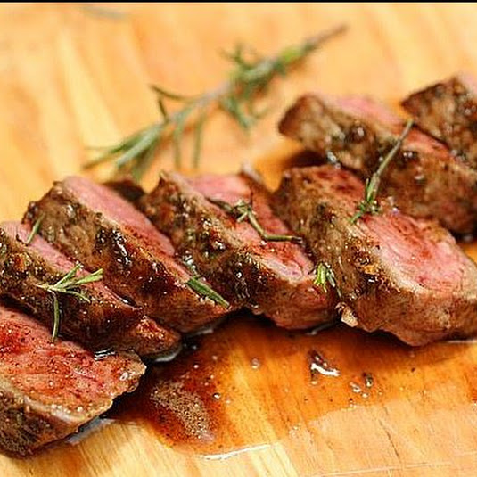

Enjoy a full meal for two or adjust ingredients accordingly.
Here is what you will need!
Servings: 2
Preheat oven to 180 degrees C.
In a small pot, melt the butter and fry the garlic until it's starting to brown
Add flour, and whisk until there are no lumps
Slowly drizzle in the milk while constantly whisking to make sure the mixture is smooth
Bring to a boil, then remove from heat
Slice the potatoes into about 1/8-inch thick slices, then fan them out in a small baking dish
Pour the sauce on top of the potatoes, then sprinkle with parmesan
Bake for about 1 hour, until the topis bubbly and golden brown
Sprinkle chooped parsley on top, then serve!
Servings: 2
Slice the lettuce into about 1-inch pieces, then transfer to a large salad bowl
Add the bacon, avocado, croutons, cheese, and dressing, mixing until evenly combined
Serve with additional parmesean on top!
Servings: 2
Preheat the oven to 95 degrees C
Generously season all sides of the steak with salt and pepper
Transfer to a wire rack on top of a baking sheet, then bake for about 45 minutes to an hour
until the internal temperature reads about 52 degrees C for rare. Adjust the bake time based
on if you like your steak more rare or more well-done.
Heat the canola oil in a pan over high heat until smoking. Do not use olive oil, as its smoke point is
significantly lower than that of canola oil and will smoke before reaching the desired cooking temperature.
Sear the steak for 30 seconds on the first side, then flip.
Add the butter, garlic, rosemary, and thyme and swirl around the pan. Transfer the garlic and herbs on top
of the steak and baste the steak with the butter using a large spoon.
Baste for about 30 seconds, then flip and baste the other side for about 15 seconds.
Turn the steak on its side and cook to render off any excess fat.
Rest the steak on a cutting board or wire rack for about 10 minutes. Slicing the steak before the resting
period has finished will result in a lot of the juices leaking out, which may not be desirable.
Slice the steak into ½ -nch strips, then fan out the slices and serve!